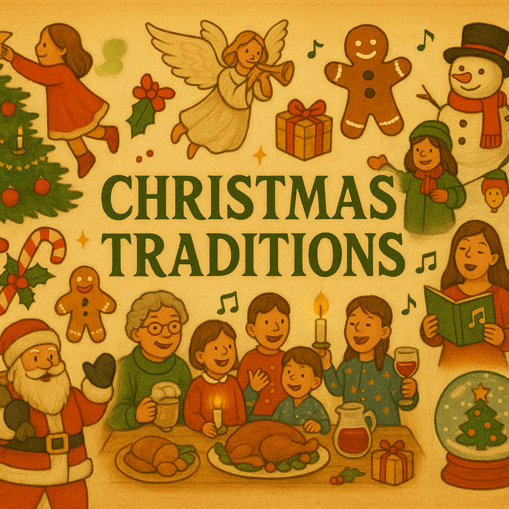

Weihnachtstraditions-Quiz 🎄
Willkommen zu deinem diesjährigen Adventskalender! Jeden Tag siehst du eine ungewöhnliche oder witzige Tradition aus aller Welt. Jedoch sind nicht alle echte Traditionen sondern manche auch frei erfunden. Du musst jeden Tag entscheiden, ob du die Tradition für echt oder erfunden hältst. Viel Spaß dabei
- Text + Bild anschauen
- „Echt“ oder „Frei erfunden“ wählen
- Sofort Rückmeldung + Erklärung sehen
- Mit „Nächster Tag“ zur nächsten Frage